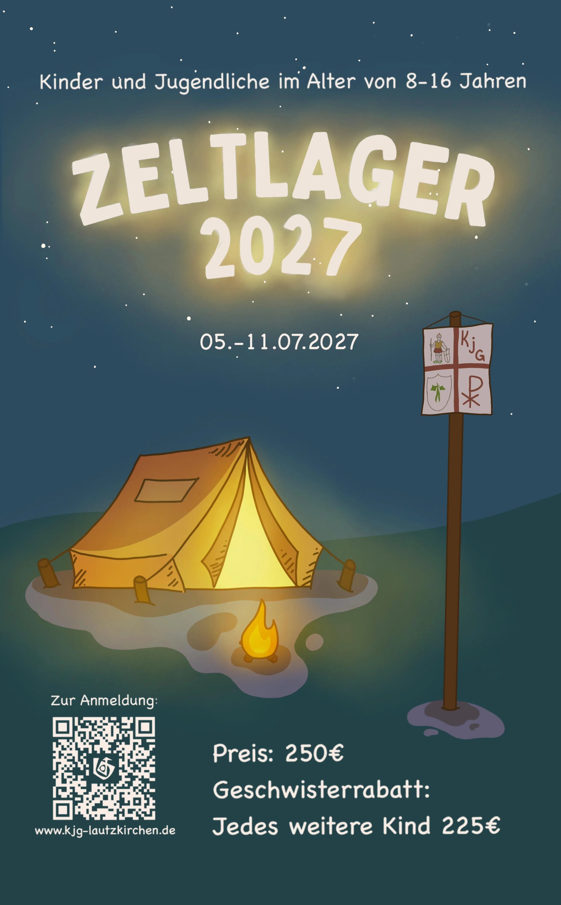
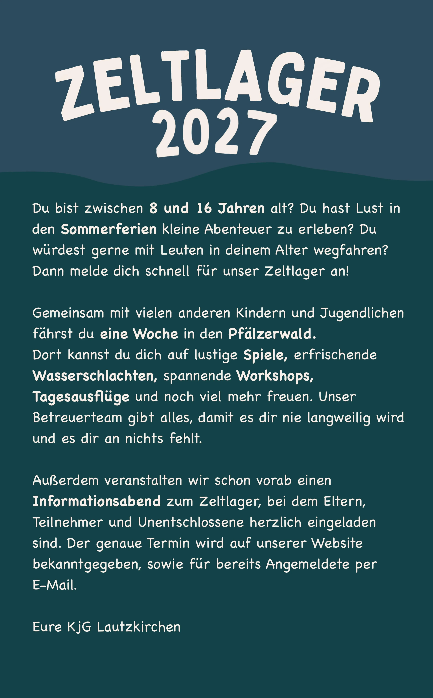

Unser Flyer


Dokumente
Informationen für Erziehungsberechtigte
Unser Zeltlager wird dieses Jahr auf einem wunderschönen Jugendzeltplatz im Dahner Felsenland stattfinden. Dort werden die Kinder geschlechtergetrennt und je nach Alter gemeinsam in Großraumzelten campieren, welche von uns gestellt werden und brauchen somit also keine eigenen Zelte mitzubringen. Einen typischen Zeltlagertag können sie sich folgendermaßen vorstellen:Gegen 8:30 werden die Kinder geweckt. Beim Frühstück um 9:00 wird das Tagesmotto bekanntgegeben. Im Anschluss gehen die Teilnehmer unter Aufsicht den Klo- und Küchendiensten nach und nach Abschluss dieser finden wir uns zusammen, um gemeinsam an unseren Workshops zu arbeiten. Nach dem Aufräumen der Workshops, gibt es etwa gegen 13:30 das Mittagessen gefolgt von etwas Freizeit, in der die Kinder mit den anderen Teilnehmern Gemeinschaftsspiele oder Fußball etc. spielen oder etwas Ruhe genießen können. Am Nachmittag finden dann Großgruppenspiele mit allen Teilnehmern statt, bei denen die Kinder in vier Teams gegeneinander antreten. Abendessen gibt es meist gegen 18:30. Daran schließt sich die Lagerrunde an, in der, neben dem üblichen Singen, auch gemeinsam über den Tag reflektiert wird und mögliche Streitereien geklärt werden können. Dann, um etwa 22:00, werden alle Kinder, bis auf die Nachtwache, in die Nachtruhe entlassen.
Bei Bedarf wären wir außerdem bereit, ein Vortreffen zu organisieren, bei dem sie uns ihre Fragen und Anliegen entgegenbringen könnten.
So erreichen sie uns:
Tel. : +49 157 76947321E-Mail : kjg-lautzkirchen-zeltlager@gmx.de
oder einfach per Direktnachricht über Instagram.